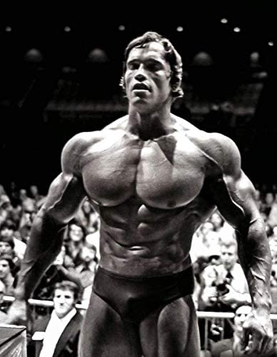

This is the based lasagna recipe. Here at Based Blends we aren't the biggest fans of lasagna. Despite this, we understand that it is not only a popular dish, but also one that will help you hit your macro goals.
Ingredients
- Mince meat from freshly slughtered cattle
- Cheese made from the milk of the cattle you just slaughtered
- Lasagna sheets
- Tomato paste home made from tomatoes from your farm
